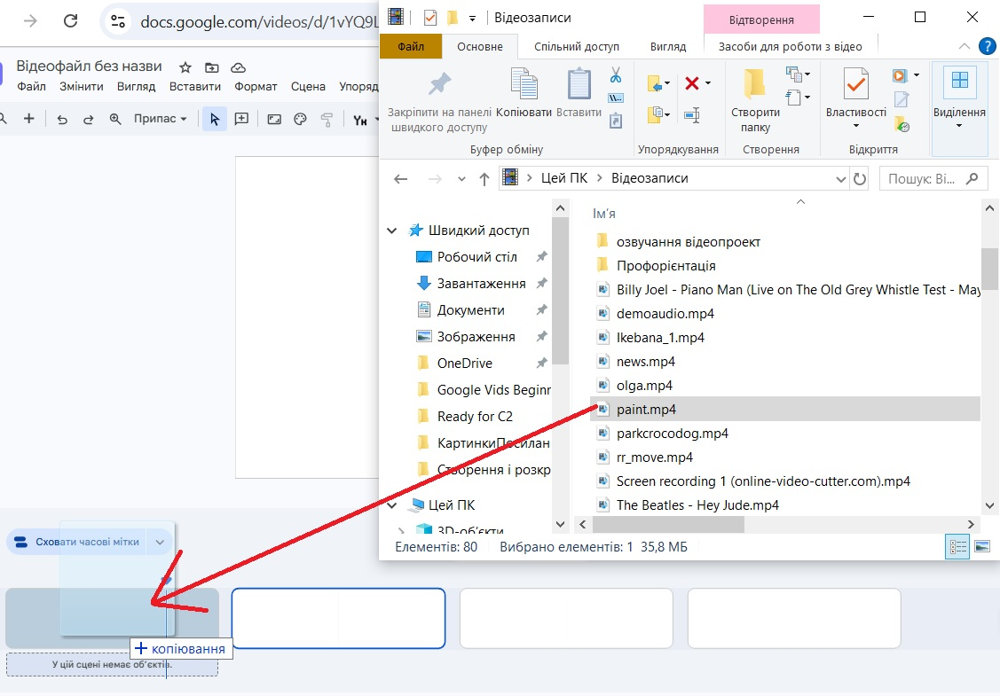
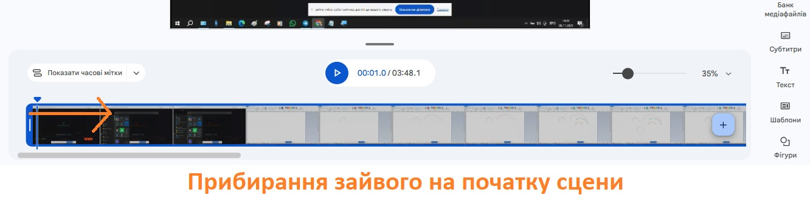
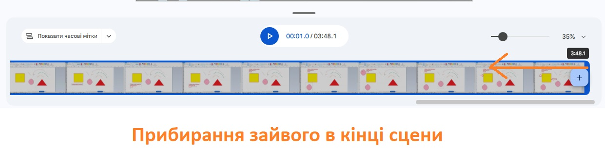
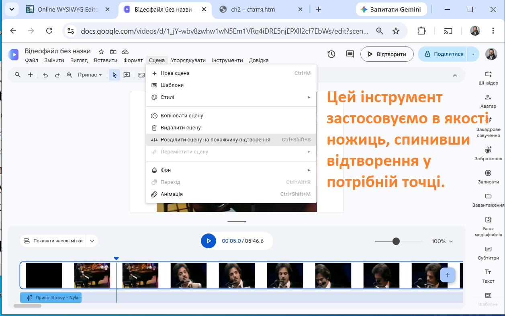
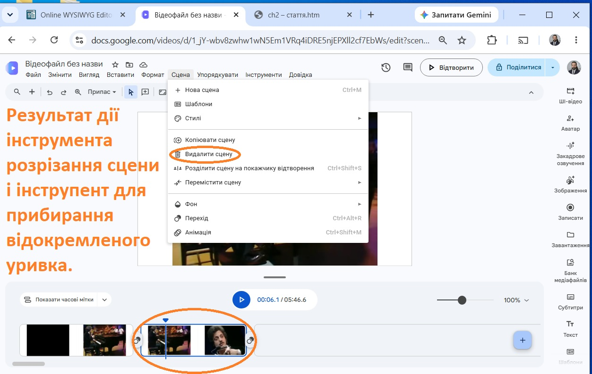

<table style="height: 221px; margin-left: auto; margin-right: auto;" width="688">
<tbody>
<tr style="height: 11.6px;">
<th style="width: 680.667px; height: 11.6px; background-color: yellow;">
<p><iframe src="menu.htm" width="700" height="110"></iframe></p>
</th>
</tr>
<tr style="height: 254px;">
<td style="width: 680.667px; height: 254px; vertical-align: top;">
<p style="text-align: justify;">Ми перейдемо до основних прийомів редагування відеозаписів і цього разу повчимося поєднувати відеофайли в один (складові відеофайли відтворюються почергово, один за одним). Також ми розглянемо можливість видалення зайвого в нашому відеозаписі.&nbsp;</p>
<p style="text-align: justify;">У попередньому занятті ми робили кілька слайдів (їхня назва у програмі Google Vids&nbsp;&mdash; сцени) для розробки презентацій. Таким же чином ми створюємо в нашому проекті стільки ж сцен, скільки записів ми хочемо поєднати. Обираючи клацом лівої кнопки миші відповідну сцену (внизу на часовій шкалі), ми заповнюємо її відповідним матеріалом. Як вставляти матеріал з Google Drive або комп'ютера, ви вже знаєте завдяки попередньому уроку.&nbsp;</p>
<p style="text-align: justify;">Також зробимо невеличке доповнення до ваших попередніх знань. Ви можете відкрити вікно Провідника Windows у папці з вашими відеоматеріалами. Потім розташувати це вікно так, щоб воно не повністю затуляло інтерфейс застосунку Vids і перетягнути відео файли з провіднику на сцену у часовій шкалі. Це кращий спосіб, ніж через меню Вставити, бо за такого перетягування довжина сцени автоматично підлаштується до тривалості вашого запису. Таке позбуває вас вільного від запису білого екрана після&nbsp;відтворення попереднього вставленого відеофайла.</p>
<p style="text-align: center;"></p>
<p style="text-align: justify;">Перейдемо до протилежної&nbsp;ситуації. У вас є запис, де змішалося потрібні фрагменти матеріалу із зайвими. Ви здогадуєтеся, напевно, як позбутися зайвого в кінці запису чи на початку, якщо пам'ятаєте, що тривалість сцени у часі можна змінювати шляхом перетягування мишкою із затисненою лівою кнопкою правої чи лівої межі прямокутника сцени на часовій шкалі.&nbsp;</p>
<p style="text-align: center;"></p>
<p style="text-align: center;"></p>
<p style="text-align: justify;">Але існує універсальний метод, який дозволить вам робити те ж саме, навіть якщо зайве у записі десь посередині. Універсальність методу полягає в тому, що ви буквально ріжете матеріал впритул до початку непотребу в змісті та відразу після такого непотребу. Таким чином ви намічаєте шматок, який видаляєте потім буквально однією клавішею Delete на клавіатурі (або як показано на зображенні нижче). У більшості відеоредакторів інструмент для розрізання смуги матеріалу (сцени) виглядає як ножиці і знаходиться на самому видному місці. Але для Vids це працює трохи інакше.&nbsp;</p>
<p style="text-align: center;"></p>
<p style="text-align: center;"></p>
<p style="text-align: justify;">Робота над розрізом для наступного видалення непотрібного відрізку запису тренує реакцію, яка є професійною якістю виконавця відеомонтажних робіт. Якщо не встигаєте вчасно поставити відео на паузу мишкою під час пошуку точки розрізу, рекомендується використовувати для паузи і продовження відтворення запису клавішу пробіл.&nbsp;</p>
<p style="text-align: center;">&nbsp;<video controls="controls" width="500" height="250">
<source src="2_1.mp4" type="video/mp4" /></video></p>
<p style="text-align: justify;">Початківцям рекомендуюється для тренування брати будь-який відеозапис і пробувати в ньому видаляти почергово відрізки, протягом яких лунає речення, слово, два склади довгого слова, склад. Для маленьких відрізків на видалення можна суміщати всі показані методи вирізання.&nbsp;</p>
</td>
</tr>
<tr style="height: 68px;">
<th style="width: 680.667px; height: 68px; background-color: cyan;">Розробка сайта Ігоря Глаголевського, 2026 р.</th>
</tr>
</tbody>
</table>